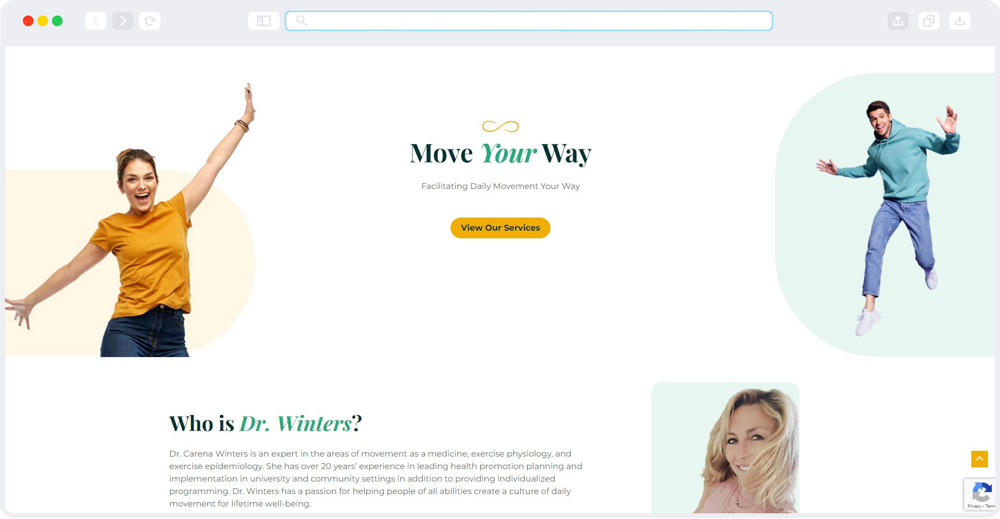
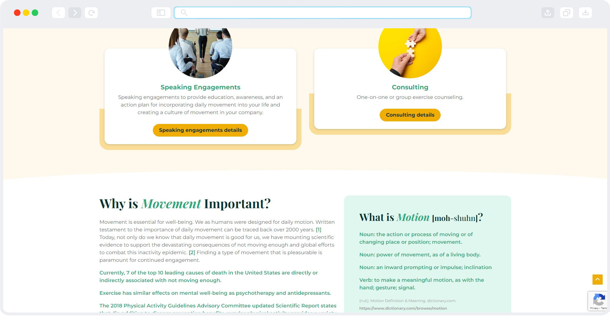
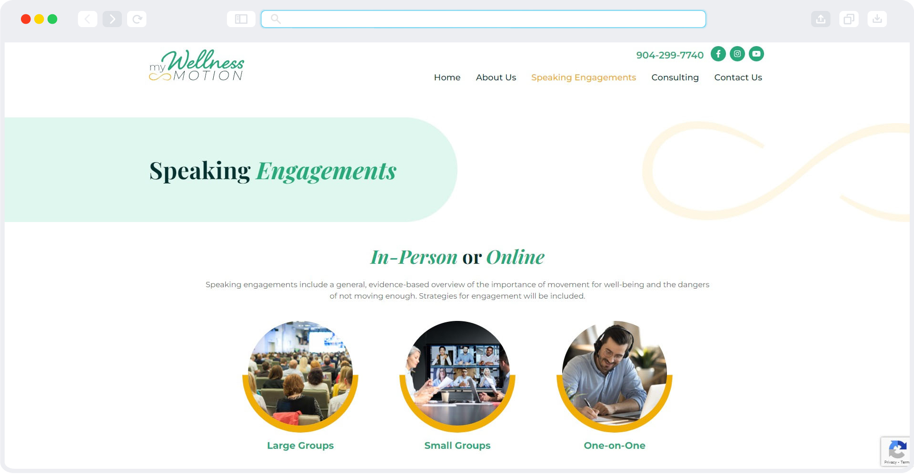
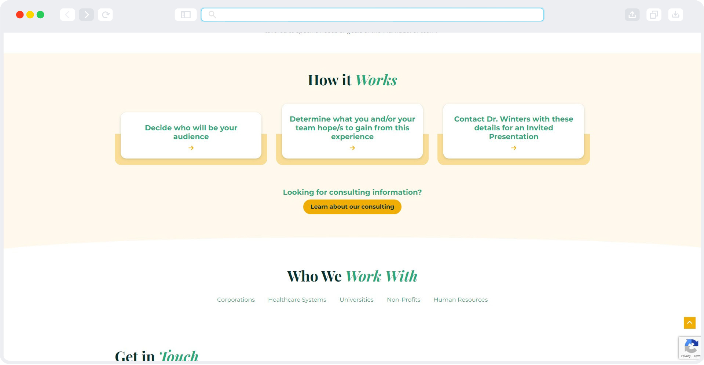

The client is a doctor and university professor with a consulting business that teaches people how to incorporate movement into their work and daily lives. I was tasked to create branding and a website to help kickstart her business. While I will not be covering the branding side of things in this study, it was fun to do!
Lead designer
4 week timeline
This was a deceptively simple project. During initial planning, the website just needed a few pages and a few modules here and there.
Due to the size of the website, the head of design said we weren't going to spend the time to wireframe anything so we went straight to design. I was feeling a little better about it because I had just done all of the branding so I had a pretty good idea of what the website should look and feel like. I included a lot of wavy lines and soft edges to incorporate the feeling of motion without having to actually inlude animations, as those are a little more expensive. The color palette really lent itself to that as well.
Due to the size of the website, the head of design said we weren't going to spend the time to wireframe anything so we went straight to design. I was feeling a little better about it because I had just done all of the branding so I had a pretty good idea of what the website should look and feel like. I included a lot of wavy lines and soft edges to incorporate the feeling of motion without having to actually inlude animations, as those are a little more expensive. The color palette really lent itself to that as well.
   I learned a lot in regards to designing in a different style other than just making something modern. So far, the site is performing pretty well and there haven't been any complaints from the client. There were a few things I would have done differently, as the amount of copy I was originally accounting for was not nearly enough for the amount that ended up in the final website.